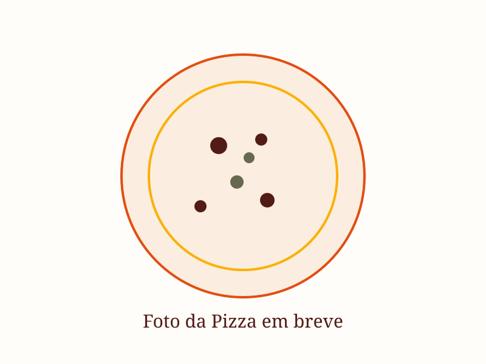

Curso de Pizza Artesanal
Sábado, das 17h às 22h · Uma noite especial, com massa, molho, risadas e vinho. Você aprende a fazer pizza artesanal do zero, com as próprias mãos — e termina a noite com o forno aceso, taças tilintando e 20 sabores passando pela mesa.

O que você vai viver
- Vai preparar duas massas de pizza com as próprias mãos
- Vai aprender todo o processo da pizza de longa fermentação
- Vai levar suas duas massas pra casa, prontas pra assar quando quiser
- Vai comer pizza. Muita pizza. A gente monta e assa cerca de 20 sabores diferentes pra degustar com a turma
O que está incluso
- Todos os ingredientes e utensílios para o preparo
- Apostila digital (PDF) com teoria e receitas
- Suas duas massas prontas pra levar
- Degustação à vontade no final — forno quente, pizza rolando
Pode levar vinho!
Essa é a parte que a gente ama: cada um traz um vinho ou cerveja e a mesa vira conversa. Não incluso, mas super incentivado!
Onde é?
No nosso ateliê, dentro de casa — o mesmo espaço onde nascem as fornadas da Pão de Verdade. Um ambiente acolhedor, com forno aceso e clima de festa.
📍 Rua Mário Pinto Sobrinho, 156 — Santa Mônica, Uberlândia
Pra quem é
Pra quem ama pizza de verdade. Pra quem quer aprender com calma, leveza e diversão. Pra quem quer viver uma noite diferente, com quem ama ou pra si.
Você pode pagar via Pix ou parcelar no cartão (até 12x).
Garantir minha vaga — R$275 💬 Falar no WhatsAppTurmas pequenas, vagas limitadas. Confirmação via WhatsApp após o pagamento.
Uma noite pra lembrar
Duas massas prontas pra levar, uma mesa cheia de sabores e a companhia que faz tudo ficar melhor.
Quero participar